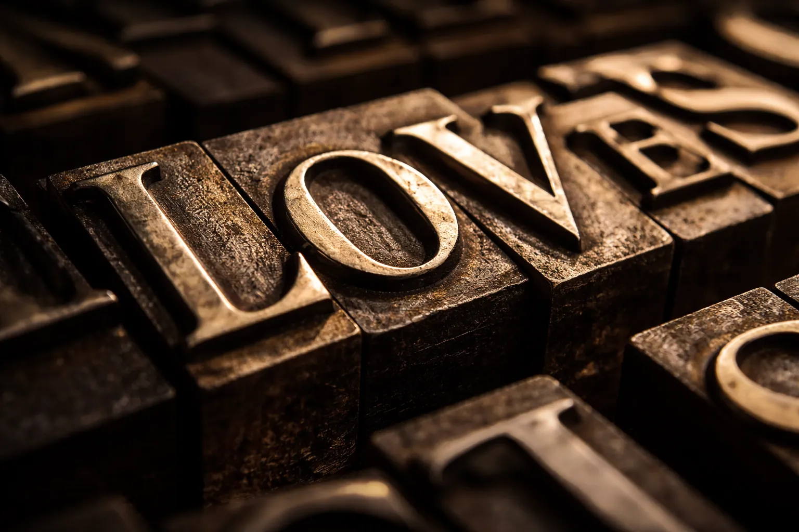
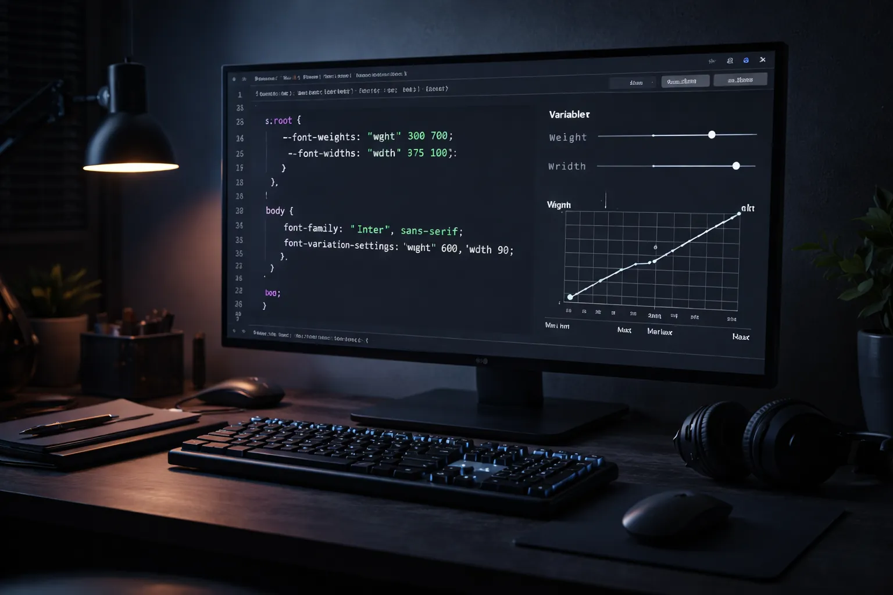
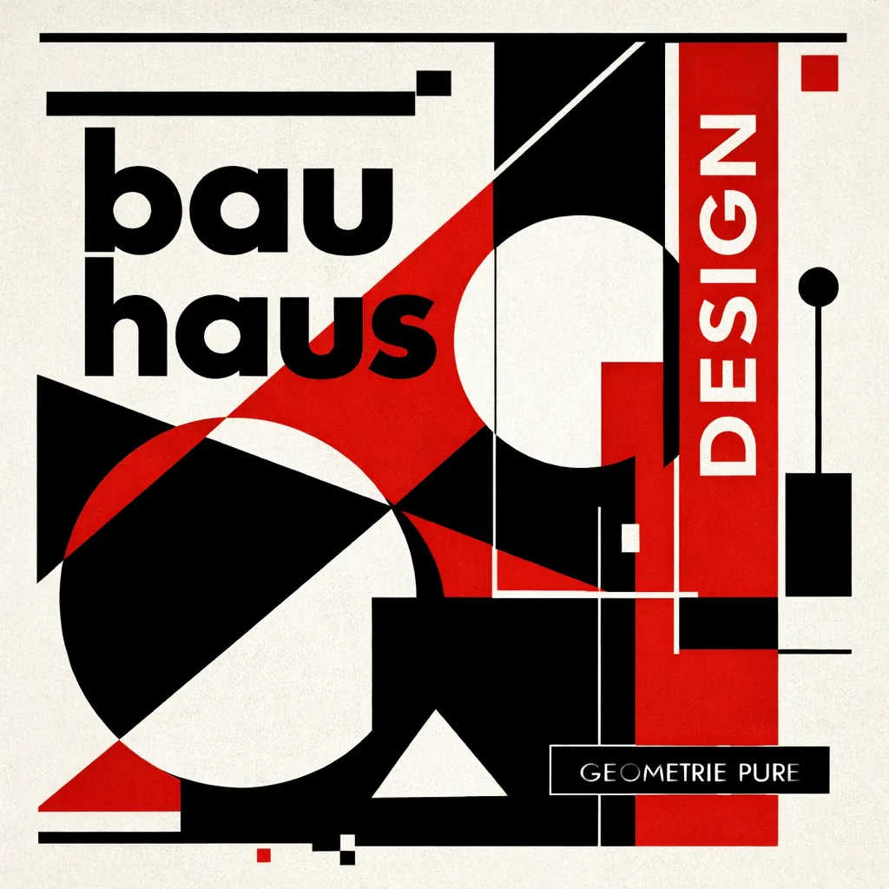
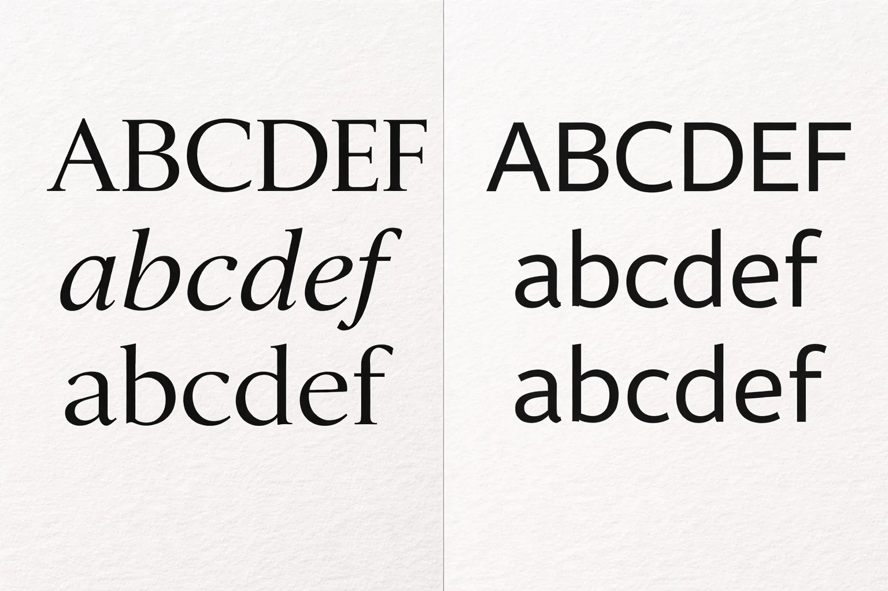
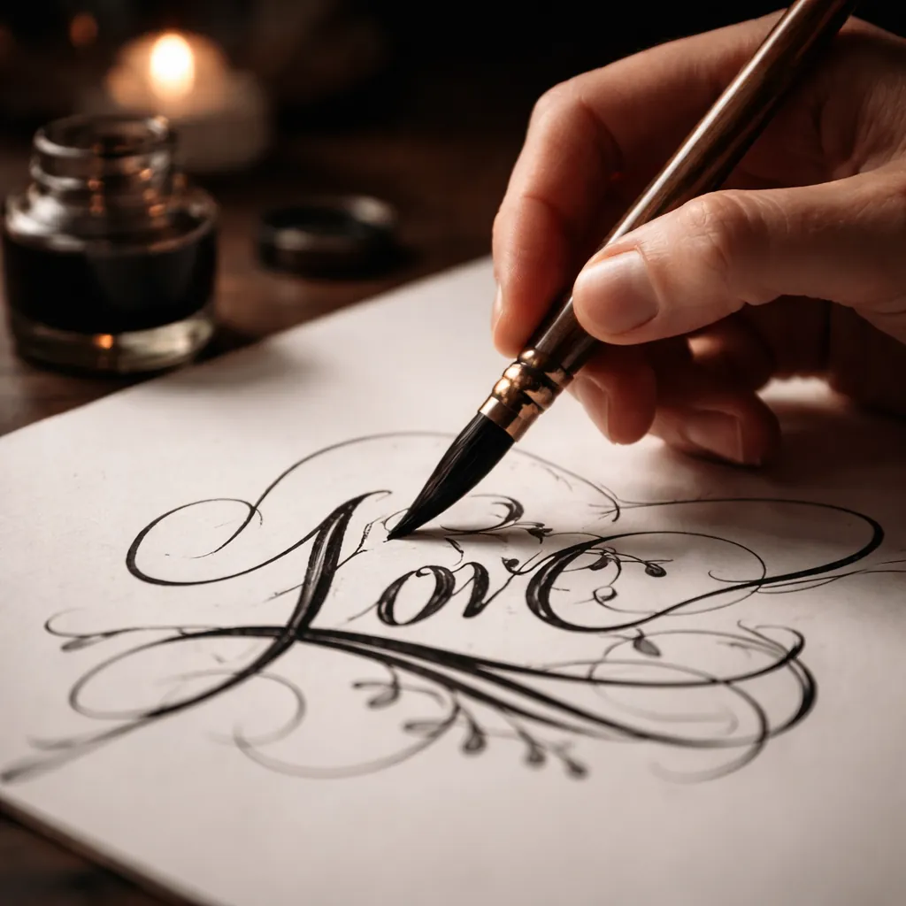
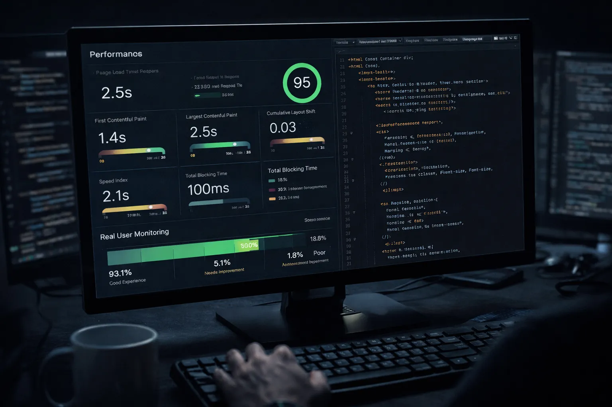

Articles récents

Renaissance du serif : comment les grandes fonderies réinventent la lettre classique pour nos écrans
Klim, Optimo, Commercial Type — une nouvelle génération de dessinateurs de caractères remet à plat 400 ans d'héritage romain pour l'ère des écrans haute résolution.

Polices variables : le guide complet pour les intégrer à vos projets web en 2026
Axes de variation, performances, compatibilité — tout ce qu'un designer doit savoir avant de basculer.

Herbert Bayer et l'alphabet universel : l'utopie typographique du Bauhaus revisitée
Un siècle après l'école de Dessau, l'idée d'une typographie fonctionnelle résonne encore dans nos interfaces.

Grotesk vs Humaniste : quel sans-serif choisir pour vos projets éditoriaux ?
De l'Helvetica au Söhne, du Futura au Aktiv Grotesk — comprendre les familles pour faire des choix éclairés.

Marion Deslandes : « Le lettering à la main, c'est remettre l'imperfection au centre »
La calligraphe raconte comment son travail à la main nourrit un univers de marques internationales.

Typographie et performance web : charger vos fontes sans ralentir votre site
WOFF2, subsetting, font-display : les techniques indispensables pour conjuguer beauté et vitesse.